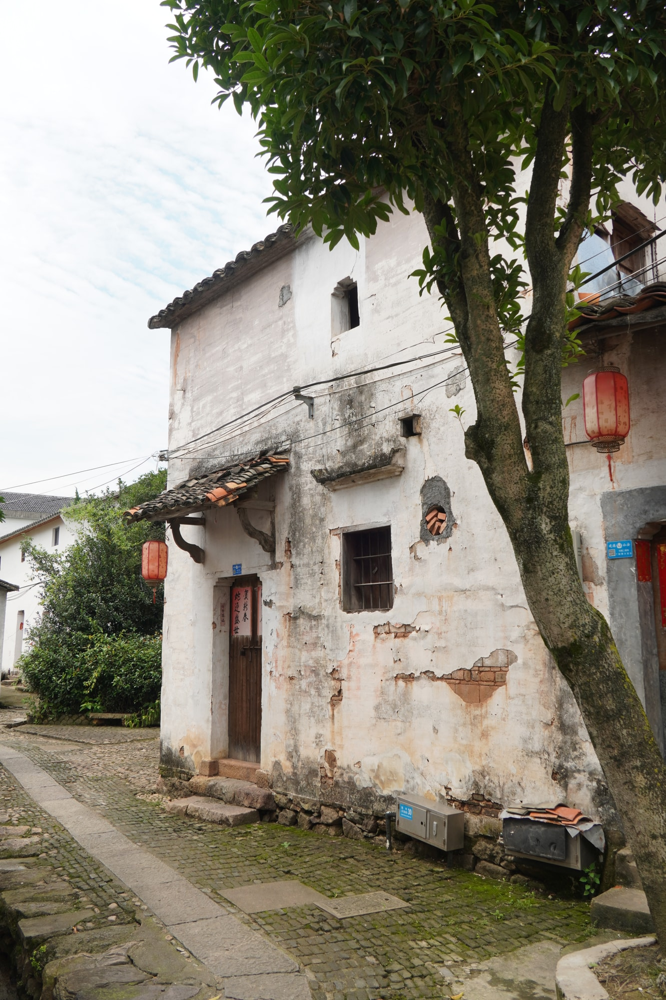

省保传统民居
巷陌深处的寻常人家叶肃钦民居
叶肃钦民居是新叶村登记在册的省级文物保护单位之一。与祠堂建筑的开阔庄重不同，它以紧凑收敛的尺度，呈现传统民居朴素而克制的一面。
01
白墙与巷角
走进这一带，映入眼帘的是高低相接的白墙与灰瓦。墙面经年累月，留下深浅不一的水渍与斑驳，转角处的山墙沿巷道收束，勾出古村特有的窄长街巷。民居彼此贴近，墙根、檐口与后来添设的生活设施交织在一起，透出这里仍有人居住的日常。
02
临巷的门户

沿巷再走，可见一处朝着巷道开启的木门门户。门扇低矮素朴，门头只做简单的砖砌线脚，门前便是村巷。它没有显赫的装饰，却是这户人家与街巷之间每日出入的门，也是新叶村大量普通民居共同的样貌。